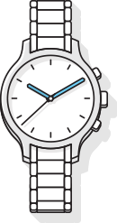
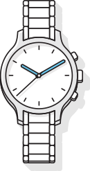
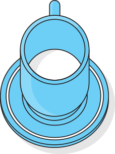
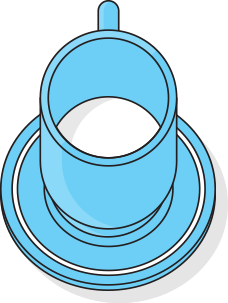

- А что если интернет подстроится под меня?
Интернет сегодня — это не только информация
и технологии, это люди: их желания,
предпочтения,
задачи. Люди — вот атомы, из которых на самом
деле состоит цифровая материя; и эти люди
очень, очень разные. Сегодня поиск умеет
подстраиваться,
помогая людям быстрее приходить к тем
решениям,
которые им нужны.
Мы представляем Атом: совокупность
инструментов,
призванных научить интернет
подстраиваться
под разных людей, которые им нужны.

Юра сразу покупает тур: в его ситуации
так
очевидно
проще. Основные вводные - приемлемого
качества.
Отель в центре тайской жизни: чтобы и еда, и
качественный
пляж, достопримечательности, и
рестораны


 


Юра носит линзы, и у него как раз
заканчивается
запас - нужно купить новые.
Отель центре тайской жизни: чтобы и еда, и
качественный
пляж, достопримечательности, и
рестораны.

 



Что Юра точно не хочет упустить, так это возможность
]попробовать
местную еду. Каждый вечер они с женой -
Каждый вечер они с женой - иногда с детьми, иногда
вдвоем
- отправляют в новый местный ресторан.